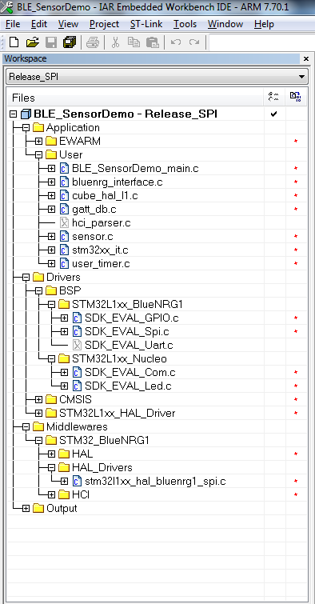
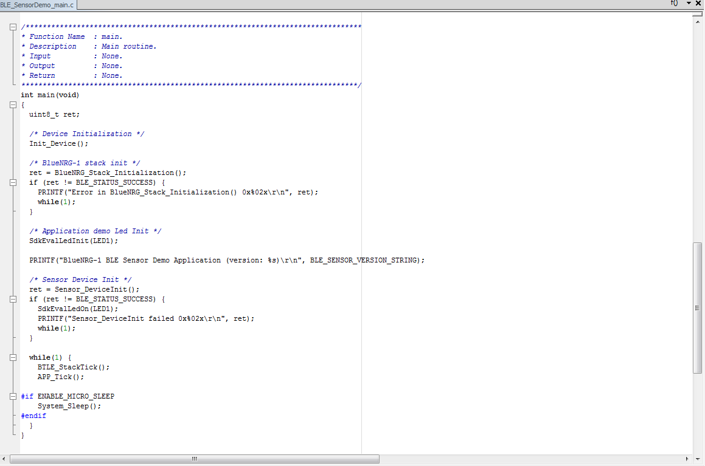
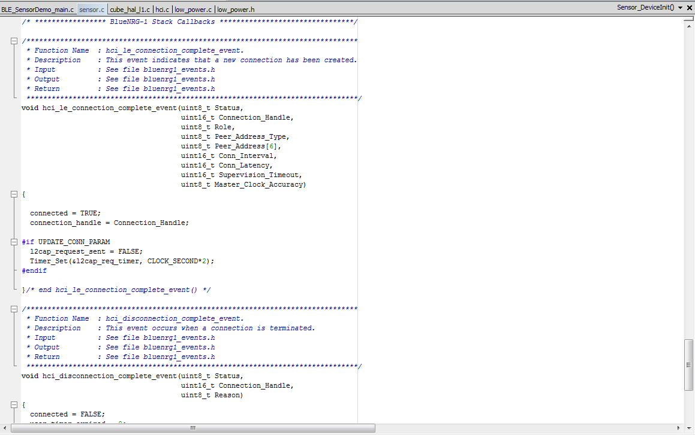

This document describes an example of the BlueNRG-1,2 network coprocessor SPI protocol implementation on a STM32L1xx microcontroller (NUCLEO-L152RE platform).
The SPI network coprocessor framework is implementing according to the specification described on SPI protocol specification doxygen documentation.
The document content is valid for both BlueNRG-1 and BlueNRG-2 devices. Any reference to BlueNRG-1 device is also valid for the BlueNRG-2 device. Any specific difference is highlighted whenever it is needed.
The BlueNRG-1/BlueNRG-2 device is configured as a network coprocessor (SPI mode).
Hardware Platforms
- BlueNRG-1 development platforms (order code: STEVAL-IDB007V1, STEVAL-IDB007V2)
- BlueNRG-2 development platforms (order code: STEVAL-IDB008V1, STEVAL-IDB007V2)
- STM32L152RE Nucleo platform (order code: NUCLEO-L152RE)
- NOTES:
-
When using a NUCLEO-L152RE platform, install the related ST-Link, ST-Link/V2, ST-Link/V2-1 USB driver signed for XP, Windows7, Windows8 (STSW-LINK009).
-
When using a NUCLEO-L152RE platform, make sure the ST-Link firmware is updated to latest version available on ST web page. This can be checked/achieved by using the STM32 ST-LINK Utility v3.6.0 (or later).
Hardware Platforms Prerequisites: connections and HW modifications
- The following connections must be performed between the 2 platforms (Nucleo-L152RE & STEVAL-IDB007Vx/STEVAL-IDB008Vx):
| Nucleo-L152RE pin/connector (SPI1) | STEVAL-IDB007Vx/STEVAL-IDB008Vx pin/connector |
| SPI CLOCK | PB3/CN10.31/CN9.4 | IO0 |
| SPI MOSI | PA7/CN10.15/CN5.4 | IO3 |
| SPI MISO | PA6/CN10.13/CN5.5 | IO2 |
| SPI CS | PA1/CN7.30/CN8.2 | IO11 |
| SPI IRQ | PA0/CN7.28/CN8.1 | IO7 |
| BLUENRG-1,2 BOOT (1) | PB14/CN10.28 | IO7 |
| BLUENRG-1,2 RESETN | PA8/CN10.23/CN9.8 | RESETN |
| VDD | VDD | VBLUE |
| GND | GND | GND |
Note (1) : BLUENRG-1,2 BOOT pin to be connected only for bootloader mode.
- The following HW modifications must be done on the BlueNRG-1,STEVAL-IDB007Vx / BlueNRG-2, STEVAL-IDB008Vx platform in order to use it as Network coprocessor with Nucleo-L152RE:
-
Remove resistor R52.
-
Open JP1 jumper.
-
JP2 jumper in 1-2 position.
-
Make sure resistors R59, R60, R61, R62 are removed on the selected platform.
Software Prerequisites: SW Configuration
- The following SW steps must be performed on the selected BLE platform (BlueNRG-1 STEVAL-IDB007Vx/BlueNRG-2 STEVAL-IDB008Vx):
-
Open the BlueNRG-1 Flasher tool and configure the BlueNRG-1 device a network coprocessor (SPI mode), by loading, respectively, the Firmware\BLE_Examples\BlueNRG-1\DTM\DTM_SPI.hex, Firmware\BLE_Examples\BlueNRG-2\DTM\DTM_SPI.hex binary file on the selected BlueNRG-1, BlueNRG-2 platform.
STM32L1xx Network coprocessor framework structure
| Path | Description |
| Nucleo-L152RE SDK Drivers | Library\STM32L\Drivers\BSP\STM32L1xx_Nucleo | SDK Drivers for NUCLEOE-L152RE Leds, COM, timers |
| STM32L1 - BlueNR-1 Nucleo | Library\STM32L\Drivers\BSP\STM32L1xx_BlueNRG1 | NUCLEOE-L152RE SPI driver for interfacing to BlueNRG-1,2 network coprocessor |
| STM32L1 CMSIS | Library\STM32L\Drivers\CMSIS | CMSIS files for STM32LXXX |
| STM32L1 Cube HAL drivers | Library\STM32L\Drivers\STM32L1xx_HAL_Driver | STM32L1xx HAL drivers (Cube framework) |
| HAL drivers | Library\STM32L\Drivers\Middlewares\ST\STM32_BlueNRG1\HAL | HAL drivers (osal, low power, timers) |
| SPI HAL drivers | Library\STM32L\Drivers\Middlewares\ST\STM32L1xx_HAL_BlueNRG1_Drivers | SPI middlewares utilities |
| ACI framework | Library\STM32L\Middlewares\ST\STM32_BlueNRG1\SimpleBlueNRG1_HCI | BLE stack ACI framework APIs for interfacing to the BlueNRG-1,2 BLE stack features and events |
| BLE Demonstration application | Project\STM32L\BLE_Beacon | BLE Beacon demo application |
| BLE Demonstration application | Project\STM32L\BLE_ChatMasterSlave | BLE Chat Master/Slave demo application |
| BLE Demonstration application | Project\STM32L\BLE_SensorDemo | BLE Sensor demo application |
| BLE Test application | Project\STM32L\DTM | BLE Direct Test Mode application |
Demonstration Applications
- The following STM32L - BlueNRG-1,2 network coprocessor (SPI mode) demonstrations application are available (EWARM IAR toolchain 7.70 or later):
-
BLE Beacon application which configures a beacon device:
-
IAR project supporting STM32L152 device (workspace: Release_SPI, Release_LowPower_SPI).
-
BLE Chat Master & Slave application which allows to target a BLE Chat application scenario with same binary image:
-
IAR project supporting STM32L152 device (workspace: Release).
-
Sensor Demo application with emulated acceleration and environmental sensors values (emulated):
-
IAR project supporting STM32L152 device (workspaces: Release_SPI, Release_LowPower_SPI).
-
DTM application to be programmed on STM32L152- NUCLEO L152RE in order to use the BlueNRG GUI tool (file STM32L_Nucleo_DTM_SPI.hex):
-
IAR project supporting STM32L152 device (workspace: DTM_SPI).
- NOTES:
-
Prebuilt binary images are available on \Firmware\STM32L folder
STM32L1 - Network coprocessor application structure
- This section provides the main guidelines to be followed when implementing a STM32L - BlueNRG-1,2 demo application (project structure, main() layout, APP_Tick() layout, event callbacks management).
Project structure
|

|
| Figure 1: BLE Sensor Demo, Release_SPI configuration example |
- Figure 1 shows the project structure of the STM32L-BlueNRG-1,2 BLE Sensor application (Release_SPI workspace). This framework can be taken as reference for implementing any network coprocessor application.
Application structure: Main function
|

|
| Figure 2: BLE Sensor Demo, main() Function |
- Figure 2 shows the application main() structure of the STM32L-BlueNRG-1,2 BLE Sensor application (it's a typical framework which can be taken as reference for any other application with proper customization):
-
Init_Device(): it initializes the STM32L1 device (HAL, clock, ...) and the SPI interface for BlueNRG-1,2 network coprocessor.
-
BlueNRG_Stack_Initialization(): it initializes the ACI framework lists and it reset the BlueNRG-1,2 device
-
Sensor_DeviceInit(): it calls the BlueNRG-1,2 APIs for configuring the BLE stack (set public address, init GATT and GAP layers, set TX power level, set security settings, add the specific Sensor Demo services and chracteristics, init user timers required for the Sensor Demo application.
-
BTLE_StackTick(): BLE stack tick APIs which allows to process the BLE stack events coming from BlueNRG-1,2 BLE stack.
-
APP_Tick(): application tick function which implements the application specific state machine.
-
System_Sleep(): low power managment API.
- NOTE: The STM32L-BlueNRG-1,2 BLE APIs protoypes are defined on the Library\STM32L\Middlewares\ST\STM32_BlueNRG1\SimpleBlueNRG1_HCI\includes\ folder header files (bluenrg1_gap_aci.h,bluenrg1_gatt_aci.h,bluenrg1_l2cap_aci.h,bluenrg1_hal_aci.h, bluenrg1_hci_le.h,bluenrg1_hal_aci.h).
Application structure: APP_Tick() function
|
|
|
| Figure 3: BLE Sensor Demo, APP_Tick() function |
- Figure 3 shows the application tick (APP_Tick()) function structure related to the STM32L-BlueNRG-1,2 BLE Sensor application:
-
It checks if application can enter in discoverable mode (Set_DeviceConnectable())
-
It performs application specific actions:
-
Notify the Acceleration characteristic at specific interval.
-
If Free Fall conditions is detected, it notified the specific Free Fall characteristic.
Application structure: BLE stack events callbacks
|

|
| Figure 4: BLE Sensor Demo, hci_le_connection_complete_event() callback |
- Figure 4 shows the hci_le_connection_complete_event() event callback required from the STM32L-BlueNRG-1,2 BLE Sensor application
-
Each time a specific BLE event is raised from the BlueNRG-1,2 BLE stack the associated BLE stack event callback function is called.
-
User is requested to implement ONLY the required BLE events callbacks according to the specific application needs.
-
The STM32L-BlueNRG-1,2 BLE events callbacks protoypes are defined on the Library\STM32L\Middlewares\ST\STM32_BlueNRG1\SimpleBlueNRG1_HCI\includes\bluenrg1_events.h header files.
References
- For a detailed description about the SPI protocol implemented over the STM32L1xx platform refer to the available BlueNRG-1,2 network coprocessor (SPI mode) html document.

 1.8.10
1.8.10